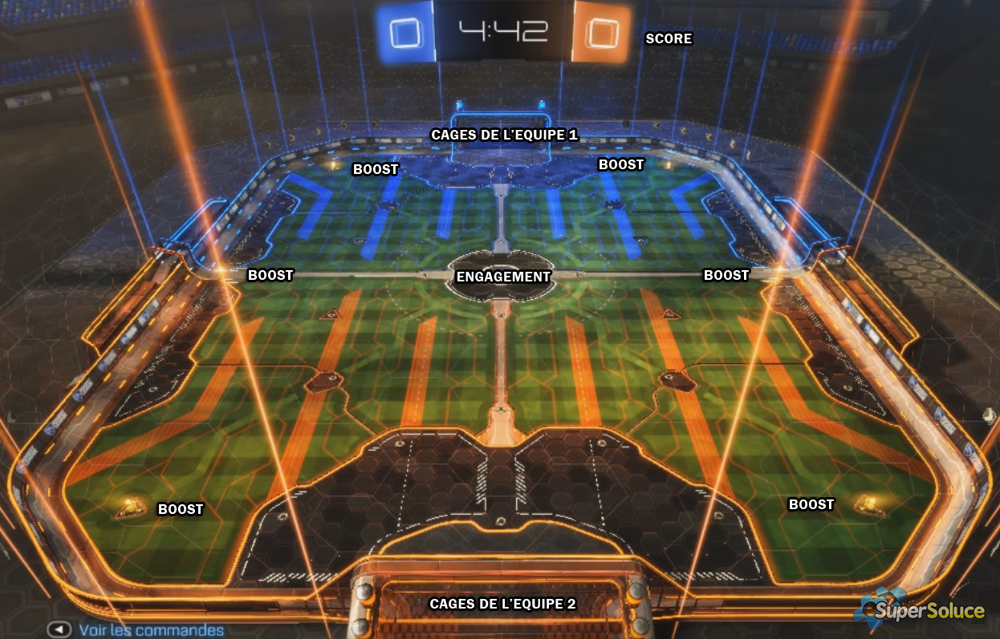

But du jeu
Rocket league est un jeu de football, mais avec des voitures !Une partie dure 5min et l'équipe ayant le plus de buts à la fin du chrono gagne le match. Rien de plus simple !
Mis à par les buts il n'y a aucun arrêt de jeu. Pas de sorties de but, pas de touches, pas de fautes, etc... Vous trouverez sur cette page la présentation détaillée de Rocket League avec toutes ses règles, ses modes de jeu, etc
Le terrain / Le boost
Le terrain de rocket league n'est pas un terrain de foot comme les autres vous vous en doutez.Voici une image pour que vous compreniez mieux ce que je vais expliquer

Au début d'une partie et apres chaque but les deux équipes sont placées dans leur camps respectifs et se préparent à l'engagement.
Il existe un système de turbo qui permet aux voitures d'aller plus vite ou même de décoller du sol. Ce qui rajoute une autre dimension très intéresante au jeu !
A chaque engagement les joueurs commencent avec 33 de boost et ils peuvent en ramasser aux quatres coins de la map et au centre (comme on peut le voir sur l'image). Ces gros boost qui sont au nombre de 6 sur la carte permettent aux joueurs de remplir leur jauge de boost à 100 et donc leur donne un avantage considérable. Mais attention ces boost se trouvent aux extrémités de la map, il est donc parfois délicat d'aller en récupérer.
Pour remédier à ce problème il existe des "pastilles" ou "pad" que l'on retrouve un peu partout sur le terrain qui nous donnent 12 de boost. Un avantage plus faible mais tout aussi intéressant car les pad se trouvent généralement sur votre chemin.
A vous de faire le bon choix !!
Les modes de jeu
Maintenant que vous connaissez le but du jeu, on va passer à la présentartion des différents modes de jeu qui existent sur rocket league.Il existe 4 grands types de mode de jeu :
Les parties classiques
Les parties classiques sont les modes de jeu les plus utilisés par les joueurs. En effet dans ces modes les parties sont "normales" comme expliqué précédemment, on peut y jouer en 4vs4, 3vs3, 2vs2, ou 1vs1.Petite particularité du mode 4vs4 ou "chaos", il n'est jouable qu'en unranked (occasionnel).
Les modes extra
Il existe 4 modes de jeu extra.- Le dropshot, qui se joue en 3vs3 et qui consiste à faire rebondir la balle au sol pour le casser et une équipe marque un but quand ils font tomber la balle à travers le sol cassé.
- Le jour de neige, jouable en 3vs3 également qui est plus ou moins une partie classique, la seule différence est le ballon. En effet dans ce mode on ne joue pas avec un ballon mais un palet de hockey, sur un terrain enneigé
- Le panier, qui est plus ou moins un match classique en 2vs2 la différence est cette fois ci au niveau des buts. En effet les buts de foot ont laissé place à des paniers de basket !
- Et enfin le rumble qui se joue en 3vs3 qui ressemble également à un match classique mais cette fois ci toutes les 10 secondes chaque joueur obtiens un pouvoir spécial que je vous laisserai découvrir par vous même !